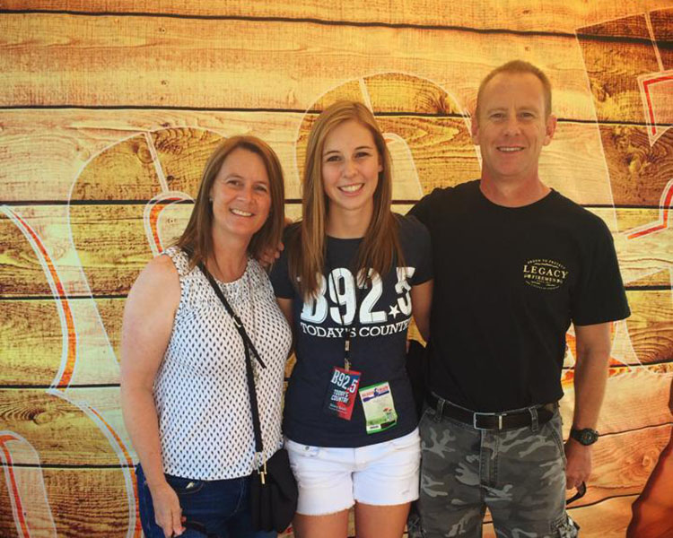
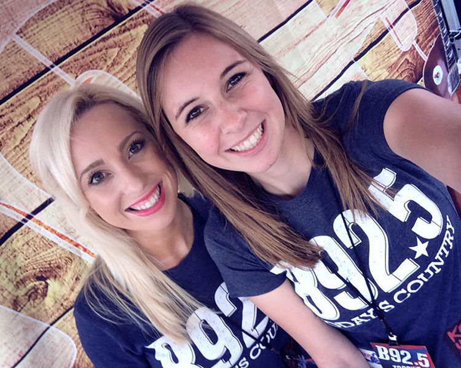

iHeartMedia



In the summer of 2014 I was a marketing intern for iHeartMedia in Sacramento. As an intern, I had the responsibility of updating the website to inform the community of upcoming events. Once my internship ended, I was hired on as a promotions representative for the remainder of the summer.My responsibilities included marketing and representing the local radio stations at events around the city.